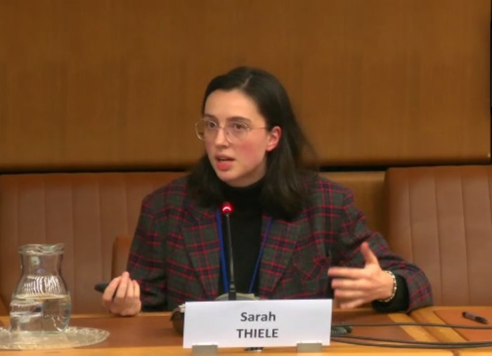
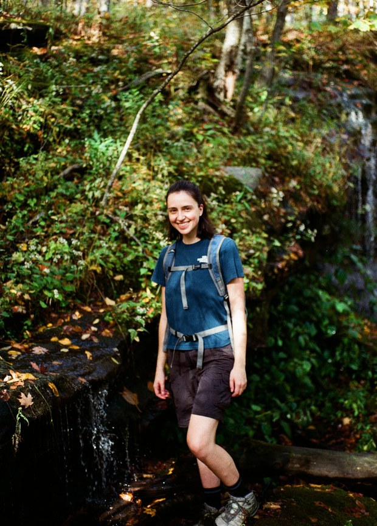

About Me
I'm a PhD candidate in Princeton University's Department of Astrophysical Sciences, working with Gáspár Bakos on detecting and characterizing satellites and near-Earth objects in wide-field images from the HATPI telescope at Las Campanas Observatory, Chile. The pipelines I've built allow us to study the population of human-made objects orbiting Earth that increasingly contaminates our data, and to mitigate their effects. By distinguishing satellites from nearby asteroids, we can discover and characterize a sub-population of asteroids that other surveys often miss. Measuring their physical and orbital properties is not only interesting science, but also a contribution to planetary defense efforts.
I am also a Junior Fellow of the Outer Space Institute and an affiliated member of the International Astronomical Union's Centre for the Protection of the Dark and Quiet Sky against Satellite Interference (IAU CPS). Through these roles, and within my research team at Princeton, I am particularly interested in the policy dimensions of large satellite constellations, including their collision and orbital debris risks and their impact on astronomical observations and dark skies. Through scientific studies and public engagement, I contribute to advocacy and regulatory frameworks aimed at space debris mitigation and protecting dark and quiet skies.

I'm passionate about science communication, and about learning how to make science as accessible, digestible and engaging as possible, both to create understanding between stakeholders in different domains and for the public.
Outside of research, you can find me hiking, crafting, or at a stand-up comedy show.
